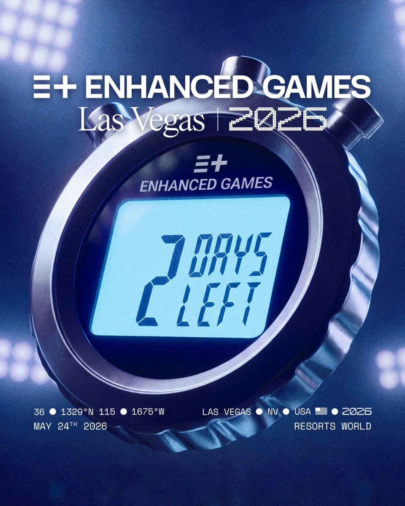

도핑을 허용하는 스포츠 대회,
인핸스드 게임
도핑을 공식적으로 허용하는 스포츠 대회가 등장했습니다. 이름은 인핸스드 게임(Enhanced Games), 말 그대로 '향상된 경기'입니다. 스포츠와 의학, 그리고 공정성이 무엇인지 정면으로 묻는 논쟁적인 대회입니다.
강화약물을 허용하는 경기
인핸스드 게임은 올림픽과 달리 선수들에게 강화약물을 허용하는 스포츠 경기입니다. 주요 종목은 육상·수영·역도·스트롱이며, 세계 챔피언과 여러 종목의 기록 보유자를 포함한 세계적인 선수 약 50명이 출전할 계획으로 알려졌습니다.

무한정 약물을 쓰는 건 아니다
모든 약물을 허용하는 것은 아닙니다. 의학적으로 승인된 약물만 사용하도록 하고, 이를 철저한 의료 시스템으로 관리한다고 합니다. 스포츠 심장학·내분비학 등 각 분야 전문가 15명으로 구성된 독립적인 의료·과학 위원회가 운영된다는 점이 인상적입니다.
유튜브 '안될과학' 채널이 위원장인 스포츠 심장학 전문의 귀도 피엘레스(Dr. Guido Pieles) 박사와 인터뷰를 진행했는데, 그는 이렇게 말합니다.
인용 ▸ "도핑은 어차피 스포츠 현장에 존재한다. 음지에서 관리 없이 쓰는 것보다, 의학적 감독 하에 안전하게 관리하는 것이 낫다."
대회는 일괄적으로 같은 약물을 쓰는 게 아니라, 선수 개개인의 신체 조건과 종목 특성에 맞춘 개인화된 의료 프로토콜을 제공한다고 합니다.
대회가 끝나도 5년간 추적
가장 인상적인 부분은 모니터링 시스템입니다. 선수들은 참가 전 기본 검사를 시작으로, 대회 중, 그리고 대회 종료 후 5년간 심장 MRI·혈액 검사 등 정기적인 의료 추적을 받습니다. 선수의 건강을 보호하는 동시에, 도핑이 인체에 미치는 영향을 과학적으로 연구하고 데이터를 축적하려는 목적이라고 합니다. 음지에서 벌어지던 일을 양지로 끌어내 연구한다는 발상 자체는 의학적으로 의미 있는 시도가 될 수도 있습니다.
스포츠의 '보디빌딩화'
인터뷰에서는 이런 말도 나옵니다. "올림픽은 올림픽대로 있고, 인핸스드 게임 같은 대회도 따로 있으면 왜 안 되나요?"
사실 이 구조는 스포츠 팬에게 익숙합니다. 바로 보디빌딩이죠. 엄격한 도핑 테스트를 통과한 선수만 나오는 내추럴 보디빌딩과, 약물 사용을 공식적으로 묻지 않고 극한의 피지컬을 추구하는 오픈 보디빌딩이 수십 년째 공존해 왔습니다. 인핸스드 게임이 노리는 것도 결국 이것 아닐까요. 올림픽은 클린 스포츠의 순수함을, 인핸스드 게임은 의학적 관리 하의 인간 능력 극한을—서로 다른 철학이 '스포츠'라는 지붕 아래 공존하는 구조 말입니다.
- 인핸스드 게임은 의학적으로 승인된 약물을 허용하고, 전문가 위원회와 5년 추적으로 관리하는 대회다.
- '올림픽과 인핸스드 게임의 공존'을 내추럴/오픈 보디빌딩 구조에 빗대어 정당화한다.
- 2026년 5월 첫 대회는 실제 열렸으나 세계기록 1개에 그쳤고, 주요 기구들은 결과를 인정하지 않았다.
생각해보기 ▸ 도핑을 '관리 하에 허용'하는 것은 스포츠의 공정성을 지키는 걸까요, 무너뜨리는 걸까요? 스포츠에서 '공정하다'는 것은 과연 무엇일까요?
p.s. 인핸스드 게임을 주관하는 인핸스드 그룹은 나스닥에 상장되어 있습니다. 역시 미국의 자본주의란….